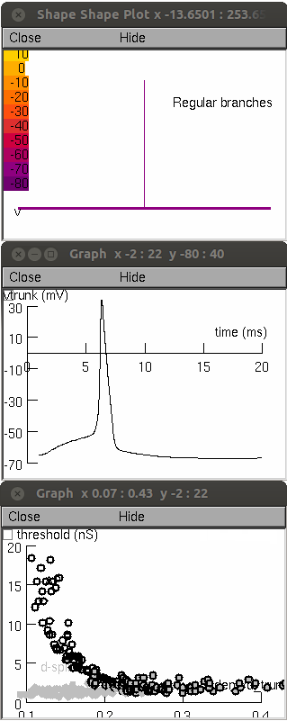

This is the readme for the model associated with the paper: Ferrante M, Migliore M, Ascoli GA (2013) Functional Impact of Dendritic Branch-Point Morphology J. Neurosci. 33:2156-2165 This model was contributed by Michele Ferrante. The model requires NEURON which is available at http://www.neuron.yale.edu Usage: Auto-launch from ModelDB (starts simulation if browser is properly setup) or do the following 1) Download and extract the archive. 2) Compile the mod files (mknrndll on mswin, mac os x, or nrnivmodl unix/linux). 3) Start the simulation with double clicking the mosinit.hoc (mswin), drag and dropping the mosinit.hoc file on the nrngui icon (mac os x) or typing "nrngui mosinit.hoc" on the command line (linux/unix). Once the simulation has started press the run simulation button (takes 2 1/2 hours on a 2009 pc). When done you should see figures like the below which corresponds to the inset in Fig. 1E in the paper: 